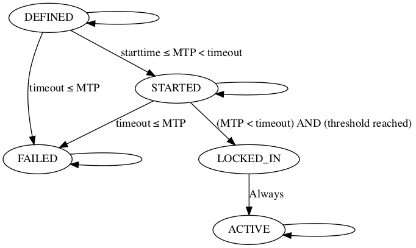

区块链是如何升级的
区块链是如何升级的
今天开始学习一些BIP和EIP的内容，开个新的专栏记录一下
什么是BIP和EIP
BIP和EIP分别指的是Bitcoin Improvement Proposal和Ethereum Improvement Proposal，可以说它是一份正式文档，提出比特币协议、网络或相关软件的改进建议。简单来说，就是比特币社区的“升级提案书”，由开发者撰写并提交，供大家讨论和实施。
区块链的升级
自从2009年比特币创世以来，我们肯定已经听过不少关于比特币的升级和修改，现在在比特币网络节点中运行的代码自然和09年的代码不同。但是，既然区块链是去中心化的，自然没有一个人能强行命令所有节点更新代码。那么，比特币的代码又是如何更新的呢？
比特币从version1到version2
在比特币区块的区块头中，储存了一个version变量，用来记录当前区块的版本号，在2012年BIP34推动了区块的version从1变成了2，让我们看看具体做了些什么：
BIP34规定，将区块的高度加入到该区块的coinbase交易中(coinbase交易就是每个区块的第一笔交易，生成一定的比特币奖励给矿工)，并且，将区块的version改为2。
这一修改首先不会影响当前的共识机制，一个version为2的区块被广播到一个未升级的节点时，该节点不会拒绝这个区块，这就是升级的向下兼容性，所以BIP34规定下的升级是一种软分叉。
这一修改也增强了交易的唯一性。在此之前，如果一个节点挖掘到了两个区块，可能会产生有相同哈希的两个coinbase交易，但是我们使用哈希值来唯一标识交易，这样就会导致冲突。而BIP34之后，为每个coinbase交易添加了一个唯一的信息，区块高度。这样减小了交易哈希冲突的可能性。同时也为后面的一些升级提供了一个可靠的标识。
在BIP34实施以后，比特币网络中同时存在升级和未升级的节点，区块链中也同时存在version1和version2的区块。那么什么时候才能彻底升级？BIP34中规定了下面两条规则:
- 75% rule: 如果前1000个区块中，有750个区块的version大于等于2时，拒绝无效的version2区块。也就是避免节点作弊，只修改了版本号却没有进行内部代码的更新。
- 95% rule: 如果前1000个区块中，有950个区块的version大于等于2，拒绝所有version小于2的区块。此时大部分(大于95%)的算力已经达成了升级的共识，开始拒绝那些没有升级的节点挖掘的区块。升级后节点的区块可以被未升级的节点接受，但是那些未升级的节点挖掘的version1区块会被升级的节点抛弃，成为孤块。这样在大部分算力达成升级共识后，用激励迫使少数节点升级。
第227,835 (timestamp 2013-03-24 15:49:13 GMT)是最后一个version1的区块，此后便实现了version1到version2的升级
什么是软分叉，什么是硬分叉 软分叉和硬分叉是两种不同的协议升级方式，简单来说，软分叉是对现有规则的收紧或限制，是向后兼容的，未升级的节点依旧可以接受升级了的区块，即使他们可能不理解其中的一些新规则； 而硬分叉是对现有规则的放宽或彻底改变，不向后兼容，未升级的节点会拒绝升级了的区块，可能导致区块链的分裂。
一些问题
BIP34提供了一个良好的更新方式，但是它还有一些问题：一是它一次只能进行一次更新，如果同时有多个特性需要修改，需要进行提案的协调；二是它不允许永久拒绝，如果当前软分叉没有完全推出，就无法进行新的软分叉；三是每次更新后，可用的版本号空间就少了一个，这是不必要的。
BIP-9
在2015年，比特币推出了BIP9，将版本字段看作一个位向量，向量的每一位都追踪了一个更新，当追踪的更新完成或超时后，会有一个休眠中断，然后版本字段对应的位就可以用于追踪新的更新。这样就实现了多个更新的并行部署，下面我们看看具体是怎么做的。
BIP9中规定，区块头中的nVersion字段是一个32bit的小端序储存的整数，前三位应该为001。当前三位不为001时，将其他位视为0。这样，我们便有29个独立的bit可以表示正在部署的软分叉，也就是可以同时进行29个独立的升级。
每个软分叉对应有4个重要参数：
- name: 软分叉的标识符，不应该重复。对于单个BIP提出的软分叉，建议选择"bipN"作为name,N为BIP编号
- bit: 用于确定nVersion字段的哪一位用于该软分叉，应该从{0,1,…,28}选择
- starttime: 指定一个区块的最小过去中位时间(MTP)，从该时间起nVersion该位具有意义，大约在包括软分叉的软件发布日期后一个月
- timeout: 超时时间，如果某区块的过去中位时间(MTP) >= 超时时间且软分叉尚未锁定，则该软分叉视为部署失败，应为开始时间后 1 年
这里我们补充一个概念，过去中位时间(MTP，median time past) 比特币区块的区块头中有一个nTime字段，储存了挖掘到此区块时的时间戳。对于某个区块，MTP 是该区块及其前 10 个祖先区块，这11个区块的nTime的中位数， 提供了一个比单个区块时间戳更稳定的时间参考点
在一个软分叉被部署时，每个区块有5种对应的状态：
- DEFINED: 每个软分叉开始时的第一个状态，创世区块对所有软分叉都为DEFINED状态
- STARTED: 当区块MTP超过starttime时，转入该状态
- LOCKED_IN: 当区块MTP没有超过timeout，且前面2016个区块中升级的区块超过了门槛(主网一般是95%)，进入LOCKED_IN状态。(为什么是2016在下面解释)
- ACTIVE: LOCKED_IN之后就进入该状态，软分叉部署成功
- FAILED: 如果超时以后还没达到LOCKED_IN状态，则进入FAILED状态，部署失败
状态转移图如下 
retarget period: 比特币网络中，将2016个区块视为一个周期，叫做retarget period。每个周期结束后，会根据前一个周期的反应调整挖矿难度，使得平均每十分钟生成一个新区块。而我们这里软分叉部署的状态转移也发生在两个retarget period交替时，所以进入LOCKED_IN状态时检查的是前2016个区块中更新的数量